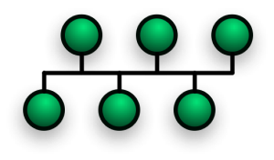
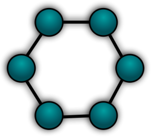
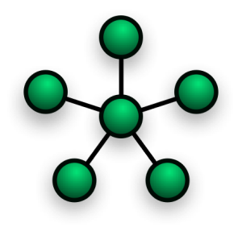

Tipos de Topologia
O que é topologia?
O termo topologia é usado para identificar uma área da matemática que estuda a continuidade e
outros conceitos originados a partir dessa. Trata-se de uma especialização relacionada com as
propriedades e as características que possuem os corpos geométricos e que se mantêm inalterados
graças a mudanças contínuas, independentemente do seu tamanho ou do seu aspecto.
Fonte:https://conceito.de/topologia
Topologia de barreamento:
Rede em barramento é uma topologia de rede em que todos
os computadores estão ligados por vários cabos em vários barramentos físicos de dados.
Fonte://pt.wikipedia.org/wiki/Rede_em_barramento

Topologia de anel:
A topologia em anel, também chamada de topologia ativa, tem a função de conectar uma
rede computadores com um formato de anel.
Sua característica é que ela transmite as informações entre os dispositivos
conectados de acordo com a proximidade imediata em uma estrutura de anel. Ou seja, conecta todos em
um mesmo círculo, de acordo com a distância, um caminhando para o outro.

Fonte:https://blog.xpeducacao.com.br/topologia-anel/
Topologia de Estrela
:É o tipo de configuração mais comum. A rede é organizada de forma que os nós sejam
conectados a um hub central, que atua como um servidor. O hub gerencia a transmissão de dados pela rede.
Ou seja, qualquer dado enviado pela rede viaja pelo hub central antes de terminar em seu destino.

Fonte: https://www.internationalit.com/post/topologia-de-rede-conhe%C3%A7a-os-principais-tipos